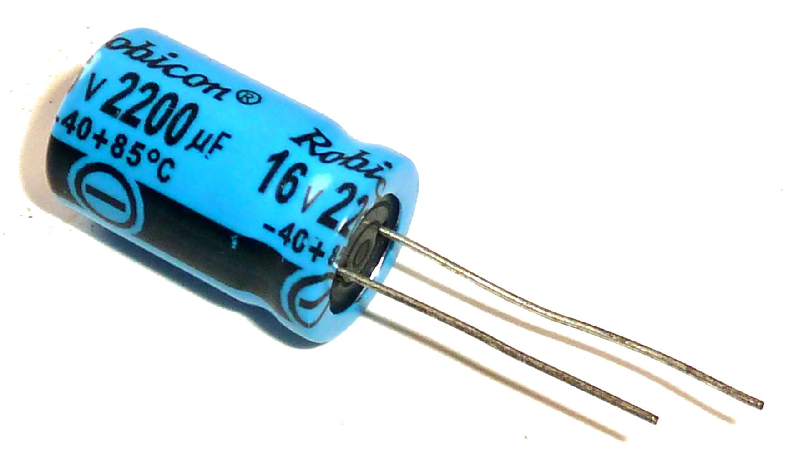
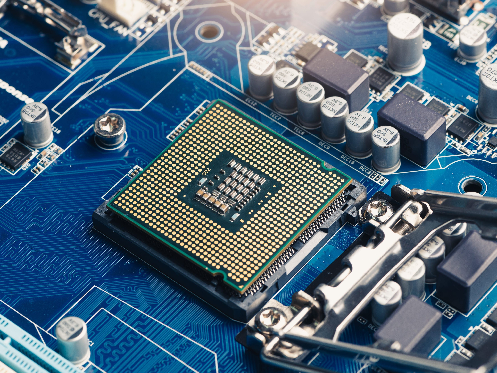
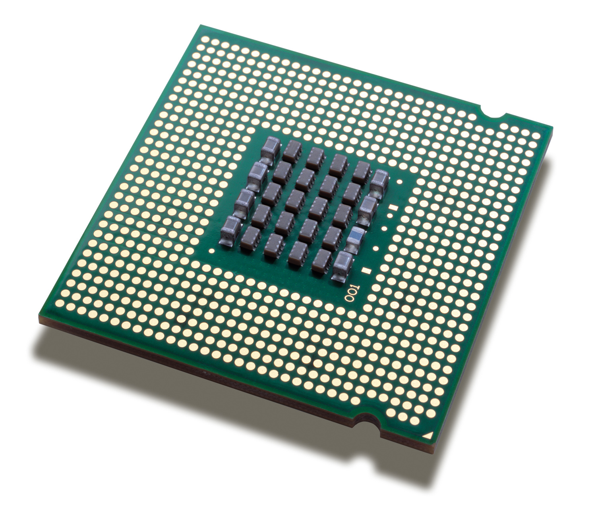
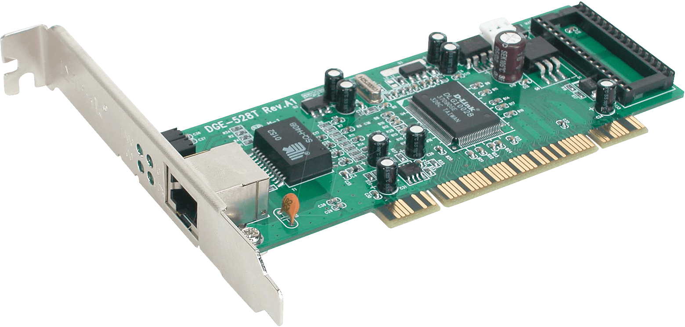
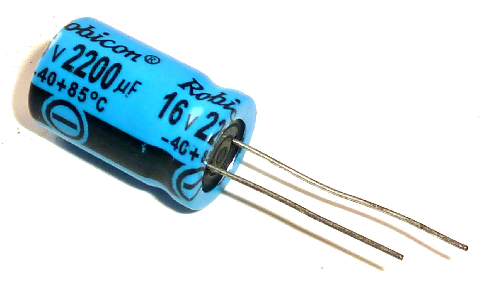
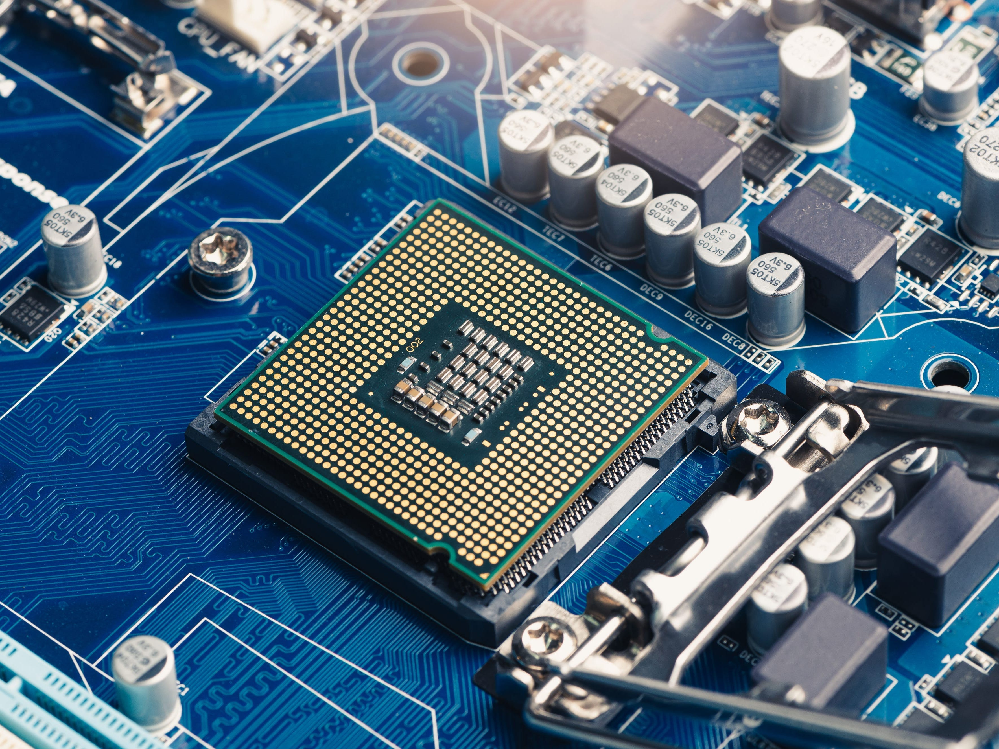
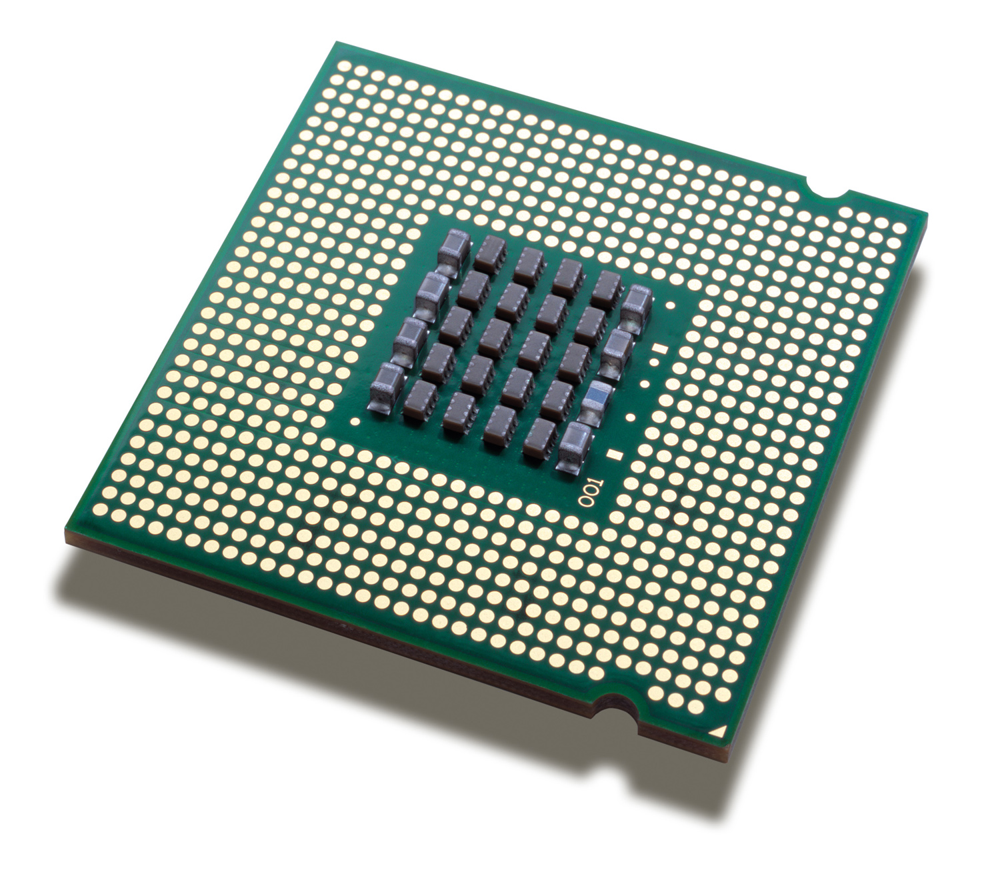
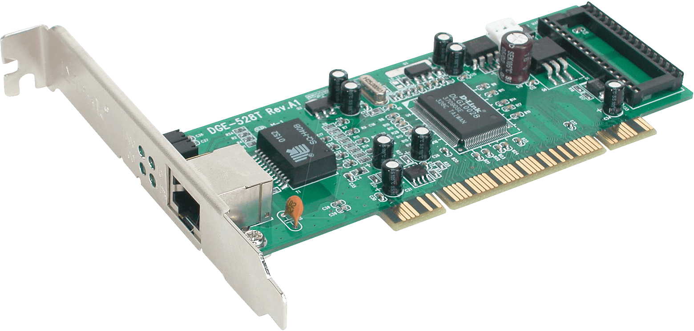

Networking Terms and Definitions








|
Networking Terms and Definitions
A physical connection is a piece of wire, optical fiber, remote arrange or comparable that interfaces one machine to another.
A logical connection could be a way between two computers that travels over numerous distinctive physical associations which the two closes are more often than not uninformed of.
Applications is a way to connect applications, information and gadgets through APIs that uncovered a few or all of their resources and i nformation on the organize. That organize permits other customers from other parts of the trade to come in and find and utilize those resources.
A transistor is an electronic component that can be utilized as portion of an enhancer, or as a switch. It is made of a semiconductor fabric. Transistors are found in most electronic gadgets.
Integrated circuit is an electronic circuit shaped on a little piece of semiconducting material, performing the same work as a bigger circuit made from discrete components. It has various transistors that performs a particular assignment.
A resistor could be inactive two-terminal electrical component that actualizes electrical resistance as a circuit component.
A capacitor could be a gadget that stores electric charge in an electric field. It may be a detached electronic component with two terminals.
A printed circuit board mechanically bolsters and electrically interfaces electrical or electronic components utilizing conductive tracks, cushions and other highlights carved from one or more sheet layers of copper covered onto and/or between sheet layers of a non-conductive substrate.
A CD-ROM is an optical plate containing sound or program information whose memory is read-only. A CD-ROM Drive or optical drive is the gadget utilized to examined them.
CPU is known as Central Processing Unit which it is the brain of the computer that sets out instructions to process the data to a computer program.
A floppy disk drive, also known as FDD or FD in short, it is a computer disk drive that empowers a client to spare information to detachable diskettes.
A microprocessor is a silicon chip computer processor where the information handling arithmetic and logic operations are performed is known as a logic chip.
A RAM or random access memory is a short term memory used to process all information.
A ROM or read only memory is built in storage medium that permanently stores information in other electronic devices.
A system unit is a part of computer that holds and houses other electronic components that perform operations and deliver comes about for complex calculations. It incorporates the motherboard, CPU, Slam and other components.
Expansion slot is a connection port which it is found inside the computer specifically on the motherboard or riser board that permits the expansion card to be connected.
NIC or network interface card is a computer hardware component that connects computer to a computer network.
TCP/IP or Transmission Control Protocol/Internet Convention, is a standard web communications conventions that permit computerized computers to communicate over long distances.
{kind=link}
{kind=link}
{kind=link}
{kind=link}
{kind=link}
{kind=link}
{kind=link}
{kind=link}
{kind=link}
{kind=link}
{kind=link}
{kind=link}